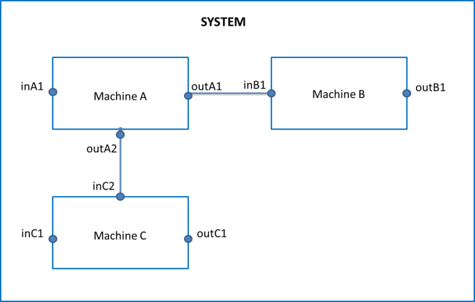
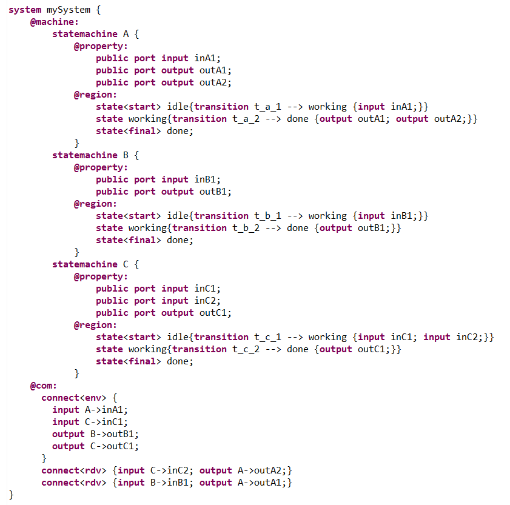
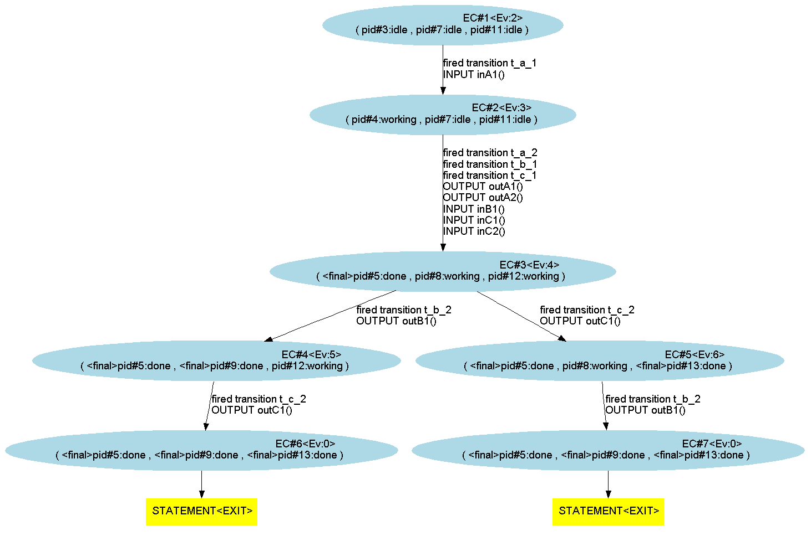
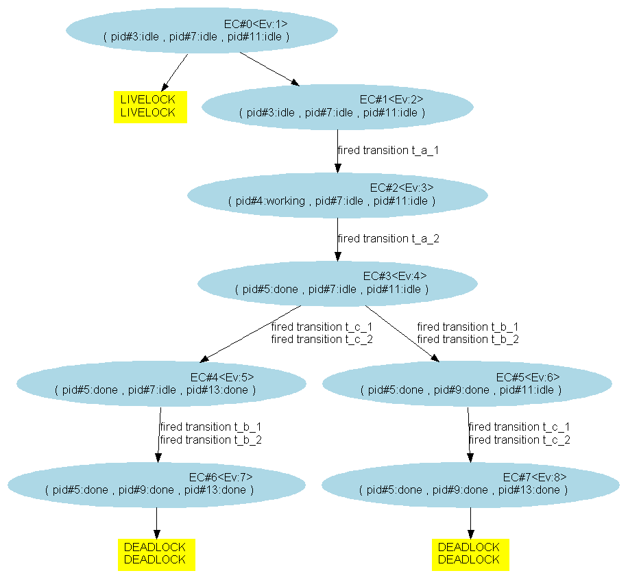

"@run{...}" is the main primitive of XLIA systems, describing the evaluation model of machines in the system. It is called at each execution step of the system in a "top-down" manner: in the @run primitive, a machine calls (directly or not) the execution of its components via the instructions run or schedule.
In a model with state-transition machines, this primitive can be completely generated by Diversity’s compiler according to semantical information given by the user (e.g. transition priorities).
Let us have a look at the following picture which describes the idea of a system :
The implied behavior of this system is that :
With XLIA, we'll try to write a system that behaves this way.
We can model the system described above while respecting the implied execution order by carefully modeling input and output ports, producing transitions conditions on those inputs and outputs and by connecting them. A possible implementation is the following :
An exploration graph generated from this model is :
We see that the execution of the system goes smoothly :
Remark : in this case, we don't acknowledge the possibility that both the machines B and C finish their work at the same time. In practice, it is perfectly acceptable for continuous time systems (it is an established use for instance in the treatment of Continuous-time Markov chains where two distincts events cannot be realized at the same time (a source)).
We can make an equivalent model this time using the system's "@moe:@run{...}". To do that :
Explanation :
As a consequence, we have the same exploration as the one we've got by expressing the model with conditions on the transitions :
As we can see, this method requires a less complex XLIA code.
This example showed that there can be an equivalence between a flow of execution defined by transition guards and a flow of execution defined in the @moe:@run{...}